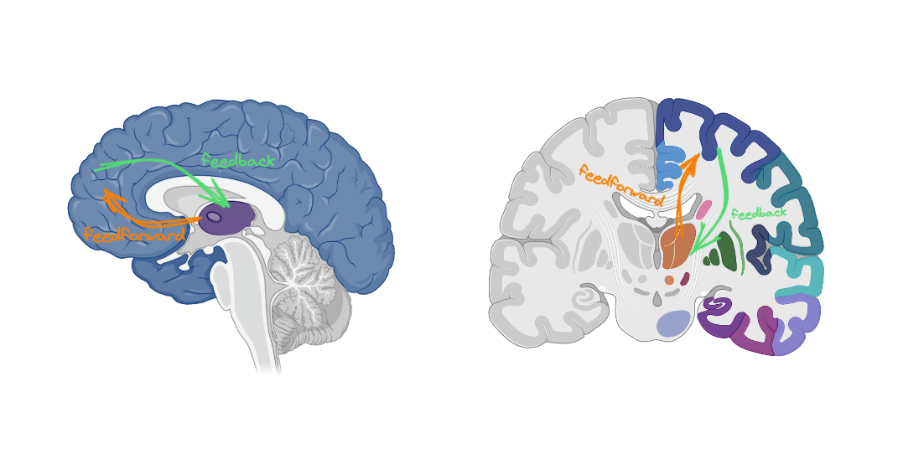
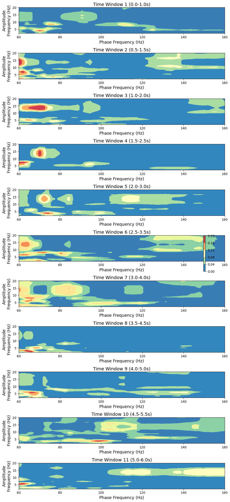
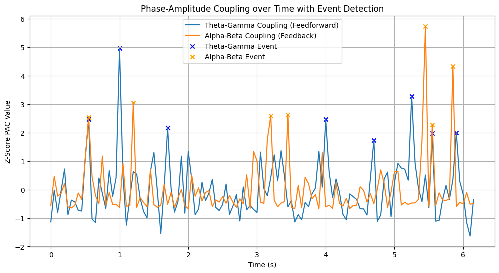

Cortical-Thalamic Information Transfer in Mild Cognitive Impairment: A Study of Theta-Gamma and Alpha-Beta Coupling Dynamics
Abstract
This study investigates cortical-thalamic information transfer in Mild Cognitive Impairment (MCI) through analyzing Theta-Gamma (feedforward) and Alpha-Beta (feedback) coupling dynamics using EEG. Employing a sliding window approach, phase-amplitude coupling (PAC) was measured between the prefrontal cortex and thalamus. Significant differences were observed in the frequency of coupling events between MCI and healthy controls (HC) (Theta-Gamma: p = 0.0017, Alpha-Beta: p = 0.0049), suggesting that compensatory mechanisms, neural hyperactivity, or altered network dynamics could be present in MCI.

Fig.1 Cortical-Thalamic Information Transfer (CTIT) pathways. Orange arrows represent feedforward Theta-Gamma coupling, while green arrows indicate feedback Alpha-Beta coupling. The study explores the dynamics of these couplings in MCI subjects compared to HC.
Introduction
Mild Cognitive Impairment (MCI) represents a transitional state between the expected cognitive decline of normal aging and the more serious decline of dementia, characterized primarily by cognitive deficits that exceed normal expectations for an individual's age and education level but do not notably hinder daily function. Exploring neural mechanisms underpinning MCI is of paramount importance for facilitating early diagnostic processes and paving the way for timely therapeutic interventions. This investigation focuses on cortical-thalamic information transfer, particularly on phase-amplitude coupling (PAC) dynamics within MCI populations. The intricacies of PAC offer a promising avenue for unraveling the complex interplay between cortical and subcortical regions that might underlie the cognitive disturbances observed in MCI.
Background and Significance
Cortical-thalamic circuits play integral roles in a myriad of cognitive processes, including attention, memory, and sensory integration. These circuits are fundamental for maintaining cognitive health and resilience against neurodegenerative disorders. Disruptions in these circuits mark a common denominator among several neurological diseases, such as Alzheimer's disease (AD) and its precursor, mild cognitive impairment (MCI) (Zhengwei Chen et al., 2021; Denis Larrivee, 2023). Recent studies highlight various pathophysiological alterations in MCI, such as changes in cortical thickness, impaired glucose metabolism, and anomalies in functional connectivity (Zonghua Li et al., 2022; Nicholas M. Vogt et al., 2019). However, the specific intricacies of neural oscillatory coupling within MCI contexts have not been exhaustively explored.
Recent studies accentuate the significance of phase-amplitude coupling (PAC) in demystifying the intricate mechanisms of neural communication that may become dysregulated in MCI. For example, insights indicate that PAC acts as a biomarker denoting cognitive states and transitions, symbolizing neural network pliability and compensatory mechanisms amidst early neurodegenerative modifications (Hyafil et al., 2015). Furthermore, examination of EEG and MEG patterns in individuals with MCI has uncovered distinct oscillatory behaviors, indicative of altered connectivity and network dynamics associated with cognitive deficits (John Preetham Gurja et al., 2021).
Phase-amplitude coupling (PAC) plays a pivotal role in neural communication, memory encoding, and retrieval (Höller et al., 2014). Research into specific frequency band couplings like Theta-Gamma and Alpha-Beta coupling has rendered invaluable insights into the neural underpinnings of cognitive impairments and their manifestations in MCI. Gu, H., et al., 2022 explored cortical Theta-Gamma coupling, highlighting its utility in tracking mental workload as an indicator of mental schema development during simulated quadrotor UAV operation, thereby emphasizing Theta-Gamma coupling's significance as a biomarker for cognitive states and adaptations in complex tasks. Ponzi, A., et al., 2023 investigated Theta-Gamma phase-amplitude coupling within a hippocampal CA1 microcircuit model, shedding light on synchronization mechanisms essential for memory function in MCI and AD. Additionally, Salimpour, Y., Anderson, W.S., 2024 underlined Theta-Gamma coupling's importance in the human hippocampus for bolstering working memory performance, indicating its potential for diagnostic and therapeutic advancements in MCI. Lastly, the findings by Wang, J., et al., 2014 that Theta-Gamma coupling reflects the integration of bottom-up and top-down processes in speech perception among children suggests a broader role in cognitive processing beyond memory.
In the recent epoch of neuroscientific research, a growing body of evidence underscores the nuanced roles of Alpha-Beta coupling in cognitive processes, illustrating a complex interplay that orchestrates cognitive functionalities. This interest is driven by discoveries that delineate how Alpha-Beta dynamics mediate and facilitate various cognitive operations, underscoring their importance in both task performance and cognitive control mechanisms.
Jevri Hanna et al., 2023, through their meticulous investigation, present task- and region-specific modulations of alpha-band connectivity as pivotal in managing the allocation of task-relevant neuronal resources. Their work articulates a foundational neuronal mechanism, particularly highlighting the sensory alpha power modulations associated with attentional resource distribution in cognitive tasks. Complementing this, the study by Jie Xiang et al., 2021 provides insights into cognitive performance enhancement through pre-configured high synchrony of high-order cognitive networks in resting states, effectively promoting task-switching capabilities. This finding furthers our understanding of the functional significance of synchronized oscillatory activities in flexible cognitive task management.
Moreover, emerging research, as shown by H. Gu et al., 2020, emphasizes the temporal dynamics of functional brain states as underpinning cognitive performance. By demonstrating that dynamic brain activities support successful cognitive functioning, this study offers a framework to dissect abnormal cognitive functioning associated with neuropsychiatric disorders, wherein the Alpha-Beta interplay likely plays a crucial role. Adding to the array of evidence, findings by R. Anomal et al., 2023 established the correlation of frontal alpha event-related spectral perturbation (ERSP) with working memory scores, suggesting the relevance of the frontoparietal network in overseeing cognitive processes.
Collectively, these studies highlight the multifaceted roles of Theta-Gamma and Alpha-Beta couplings across various cognitive functions and disorders. The presence of such coupling in different cognitive tasks underscores their broad relevance to understanding and diagnosing MCI, indicating that alterations in these couplings could serve as biomarkers for the onset and progression of MCI. This study aims to explore PAC dynamics within cortical-thalamic pathways in MCI, offering novel insights that could contribute to early detection and therapeutic strategies.
Hypothesis
MCI subjects exhibit increased Theta-Gamma (feedforward) and Alpha-Beta (feedback) coupling events due to compensatory mechanisms, neural hyperactivity, and altered network dynamics.
In this study, it is hypothesized that individuals with Mild Cognitive Impairment (MCI) will exhibit an increased frequency of Theta-Gamma (feedforward) and Alpha-Beta (feedback) coupling events compared to Healthy Controls (HC). This hypothesis is grounded in the understanding that MCI is associated with alterations in neural oscillatory dynamics, including phase-amplitude coupling, which may reflect compensatory mechanisms, neural hyperactivity, and disrupted network dynamics. The heightened coupling events in MCI subjects could be indicative of adaptive responses to cognitive deficits, reflecting altered neural communication patterns and network interactions.
Methods
Participants
The inclusion criteria for participants within the MCI group were based on a meticulous selection process from a larger dataset that included subjects across various cognitive states: Healthy Elders, People with Subjective and Mild Cognitive Impairment, and Alzheimer's Disease, provided by (Lazarou et al., 2020).
Group Selection Criteria:
- The MCI cohort consisted of 83 participants initially (60+ years old), from which 78 were selected based on the quality and properties of their EEG recordings.
- The HC Elders (60+ years old) group comprised 31 participants with no history of cognitive impairment or neurological disorders.
- The selection emphasized the quality of EEG recordings, excluding segments with artifacts such as eye blinks, muscle movements, and other non-cerebral activities. Also, segments affected by noise from electrical power lines and other environmental sources, or those with unacceptable channels that could not be interpolated successfully, were excluded.
- The criteria for a segment’s inclusion in the analysis were the absence of artifacts, noise, and bad channels, and the segment’s duration of at least 30 seconds to ensure sufficient data for a robust analysis.
From this selection process, 78 MCI participants' and 31 HC participants' EEG recordings were deemed suitable for the study, with 2758 (MCI) and 1250 (HC) segments passing the quality thresholds.
EEG Data Collection
EEG data collection was carried out using the EGI GES 300 system, equipped with 256 channels, capturing high-density EEG recordings from the participants. The data collection was part of an experimental setup designed to record resting-state EEG activity, where subjects were instructed to alternate between opening and closing their eyes upon the experimenter's request during a ~9-minute session.
EEG Recording Criteria and Preprocessing:
- The analysis focused on raw data segments manually inspected for quality control, ensuring the removal of artifacts, noise, and bad channels through Independent Component Analysis (ICA) using the Infomax ICA algorithm, which aligns with the EEGLab's ICA process (Gramfort et al., 2013).
- Bad channels identified during the manual inspection were marked and interpolated using the nearest neighbors method.
- A bandpass filter of 1 - 100 Hz was applied to the segments before further analysis, adhering to the recommended processing parameters for the Infomax ICA.
- Each selected and preprocessed segment was subjected to a detailed spectral analysis to investigate the power distribution across various frequency bands: Delta, Theta, Alpha, Sigma, Beta, and Gamma. This involved the calculation of relative band powers for each recording, the generation of Power Spectral Density (PSD) plots, and topographic maps to visualize and analyze the EEG data's spectral characteristics comprehensively.
{kind=link}
Fig.2 Quality check plot for MCI Subject 1. The figure is divided into several sections displaying different aspects of EEG spectral data for a 61.6-second segment from subject i052. On the left, a barplot illustrates the relative bandpower within standard EEG frequency bands, with the Alpha band (8-12 Hz) demonstrating the highest relative power, followed by Beta, Delta, Sigma, Theta and Gamma bands. Centered, a Power Spectral Density (PSD) plot shows the distribution of power across frequencies ranging from 1 to 100 Hz, with multiple traces likely indicating different channels. The PSD exhibits a characteristic decrease in power with increasing frequency, with a notable peak in the Alpha band. An inset spherical head model highlights the distribution of Gamma band activity. Below the PSD, topographic maps for each frequency band display the power distribution across the scalp, with red tones indicating higher power levels. Delta band activity is broadly distributed, Theta shows frontal prominence, Alpha is concentrated posteriorly, Beta and Gamma reveal more varied spatial distributions.
The detailed steps for preprocessing the EEG data can be found in the previous report preproc02 and previous report model01.
Source Localization
Preprocessed EEG segments were used for source localization analysis to extract source time courses (STCs) from 42 defined Regions of Interest (ROIs) within the brain derived from the Human Connectome Project (HCP) combined atlas, a comprehensive framework that integrates diverse anatomical and functional datasets to facilitate detailed brain mapping and connectomics research. These ROIs encompass key networks implicated in cognitive functioning, including the Default Mode Network (DMN), Salience Network (SN), Central Executive Network (CEN), along with regions associated with sensorimotor processing, visual and auditory functionalities, attention, memory, emotion, and other cognitive domains.
A custom function was used to compute STCs, employing sLORETA ico4, snr 0.5, pos 5.0 with fsaverage brain template for inverse modeling and focusing on meaningful regions within the HCPMMP1_combined atlas using the MNE-Python library.
Selected ROIs:
- ACAMPCR-rh: Anterior Cingulate And Medial Prefrontal Cortex Right Hemisphere
- ACAMPCL-lh: Anterior Cingulate And Medial Prefrontal Cortex Left
- Right-Thalamus-Proper: Proper Thalamus Right Hemisphere
- Left-Thalamus-Proper: Proper Thalamus Left Hemisphere
{kind=link}
Fig.3 Selected Regions of Interest (ROIs) for source localization analysis. The figure displays the 42 ROIs defined by the Human Connectome Project (HCP) combined atlas. Deep brain structures such as the thalamus are not present in this figure.
Phase-Amplitude Coupling Analysis
To systematically derive PAC dynamics, a sliding window approach using Python's numpy and tensorpac libraries was employed. The PAC method used is the Gaussian Copula PAC (GCPAC) described in (Ince et al 2017). The following notation describes the mathematical procedure for obtaining PAC dynamics.
-
EEG Data Representation:
Let be the EEG data matrix with dimensions . For this analysis, a subset of channels was focused on:
where represents the selected channels: 'Left-Thalamus-Proper', 'Right-Thalamus-Proper', 'ACAMPCL-lh', and 'ACAMPCR-rh'. -
Sliding Window Parameters:
Define the window size (100ms) and step size (50ms) in milliseconds, which are converted to samples:
where is the sampling frequency (250 Hz in this study). -
Phase-Amplitude Coupling (PAC) Calculation:
Thetensorpaclibrary'sPacclass was used to compute PAC values for two couplings:-
Theta-Gamma coupling (feedforward):
wheref_phaandf_amprepresent the frequency ranges for phase and amplitude, respectively.
(f_pha=(4, 8, 1, 0.5) indicates the Theta band (4-8 Hz) with a step of 1 Hz and a width of 0.5 Hz, while f_amp=(30, 250, 5, 1.0) denotes the Gamma band (30-250 Hz) with a step of 5 Hz and a width of 1.0 Hz). -
Alpha-Beta coupling (feedback):
wheref_phaandf_amprepresent the frequency ranges for phase and amplitude, respectively.
(f_pha=(8, 12, 1, 0.5) indicates the Alpha band (8-12 Hz) with a step of 1 Hz and a width of 0.5 Hz, while f_amp=(15, 30, 5, 1.0) denotes the Beta band (15-30 Hz) with a step of 5 Hz and a width of 1.0 Hz).
-
-
Window Iteration:
Let be the number of windows:
Initialize arrays to store PAC values:
-
PAC Computation for Each Window:
For each window from 0 to :
Calculate PAC values:
-
Z-Score Normalization:
Normalize the PAC values using z-score normalization:

Fig.4 Time series plot of Theta-Gamma and Alpha-Beta phase-amplitude coupling (PAC) values across multiple windows. The PAC values are z-score normalized to facilitate comparison between the two coupling types. window size = 100ms, step size = 50ms.
{kind=link}
Fig.5 Comodulograms illustrating the phase-amplitude coupling (PAC) values for Theta-Gamma and Alpha-Beta couplings. The color intensity represents the strength of PAC, with warmer colors indicating higher coupling values. window size = 1s, step size = 500ms.
Peak Detection and Counting
To identify and count the significant peaks in the PAC values, a peak detection method using Python's scipy library was employed. This process involves defining a threshold and detecting peaks that exceed this threshold. The following notation describes the mathematical procedure for obtaining and counting peaks in PAC dynamics.
-
Threshold Definition:
Let and be the z-score normalized PAC values for Theta-Gamma and Alpha-Beta couplings, respectively. Define a single threshold as a percentage of the maximum PAC value:
-
Peak Detection:
Using thefind_peaksfunction from thescipy.signallibrary, detect peaks that exceed the defined threshold:

{kind=link}
Fig.6 Time series plot of Theta-Gamma and Alpha-Beta phase-amplitude coupling (PAC) values with significant peaks marked. The peaks are detected based on a threshold defined as a percentage of the maximum PAC value.
- Peak Counting:
Count the number of significant peaks detected in the PAC values:
Statistical Analysis of MCI vs HC Coupling Occurrences
To compare the coupling occurrences between the MCI (Mild Cognitive Impairment) and HC (Healthy Controls) groups, statistical tests, including the t-test and Mann-Whitney U test, were performed. The following steps outline the procedure for statistical analysis and visualization of the results.
-
Data Preparation:
Let be the DataFrame containing the coupling events data, with columns 'Group', 'Theta-Gamma Coupling Events', and 'Alpha-Beta Coupling Events'. Separate the data into two groups:
-
Statistical Tests:
Perform the t-test and Mann-Whitney U test for Theta-Gamma and Alpha-Beta coupling events:- Theta-Gamma Coupling Events:
- Alpha-Beta Coupling Events:
- Theta-Gamma Coupling Events:
-
Visualization:
Create box plots for Theta-Gamma and Alpha-Beta coupling events with the corresponding p-values:
{kind=link}
Fig.7 Box plots comparing Theta-Gamma and Alpha-Beta coupling events between MCI and HC groups. The p-values from the t-test and Mann-Whitney U test are displayed to indicate statistical significance.
Plotting the Distribution and Density of Coupling Events by Group
To visualize the distribution and density of Theta-Gamma and Alpha-Beta coupling events for MCI and HC groups, histograms and kernel density estimation (KDE) plots were used. These plots provide insights into the frequency and distribution of coupling events in each group.
Distribution of Theta-Gamma and Alpha-Beta Coupling Events by Group

Fig.8 Histogram showing the count of Theta-Gamma and Alpha-Beta coupling events for MCI and HC groups. The x-axis represents the number of coupling events, while the y-axis indicates the frequency of occurrence.
Density Plot of Theta-Gamma and Alpha-Beta Coupling Events by Group

Fig.9 Kernel Density Estimation (KDE) plot showing the probability density of Theta-Gamma and Alpha-Beta coupling events in MCI and HC groups. The x-axis represents the number of coupling events, while the y-axis indicates the probability density.
These visualizations collectively help in understanding the distribution and density of coupling events, providing a comparative view of Theta-Gamma and Alpha-Beta coupling occurrences between MCI and HC groups. This procedure provides a detailed framework for detecting and counting significant peaks in the PAC values, allowing for the analysis of neural coupling events in EEG data.
Results
The analysis of phase-amplitude coupling (PAC) dynamics between the prefrontal cortex and thalamus in individuals with Mild Cognitive Impairment (MCI) and Healthy Controls (HC) revealed significant findings. The primary objective was to investigate the frequency and strength of Theta-Gamma (feedforward) and Alpha-Beta (feedback) coupling events in these groups.
PAC Dynamics
Using a sliding window approach and Gaussian Copula PAC (GCPAC), PAC values for Theta-Gamma and Alpha-Beta couplings were measured. The time series plot of z-score normalized PAC values (Fig. 4) and the comodulograms (Fig. 5) illustrate the PAC dynamics across multiple windows, highlighting the differences between MCI and HC groups.
Peak Detection
Significant peaks in the PAC values were detected using a threshold set at 30% of the maximum PAC value. The time series plot with marked peaks (Fig. 6) shows the identified Theta-Gamma and Alpha-Beta coupling events. The number of detected coupling events were as follows:
- Theta-Gamma Coupling Events: ,
- Alpha-Beta Coupling Events: ,
Statistical Analysis
T-tests and Mann-Whitney U tests were conducted to compare the coupling occurrences between MCI and HC groups:
- Theta-Gamma Coupling Events:
- t-test p-value:
- Mann-Whitney U test p-value:
- Alpha-Beta Coupling Events:
- t-test p-value:
- Mann-Whitney U test p-value:
The box plots (Fig. 7) illustrate the distribution of coupling events in both groups, highlighting the statistical significance of the differences.
Distribution and Density
The histograms and KDE plots (Fig. 8 and Fig. 9) show the distribution and density of Theta-Gamma and Alpha-Beta coupling events by group. These visualizations reveal distinct patterns in coupling events between MCI and HC participants.
Discussion
The findings of this study provide novel insights into the cortical-thalamic information transfer in individuals with Mild Cognitive Impairment (MCI). The analysis of phase-amplitude coupling (PAC) dynamics highlights significant differences in Theta-Gamma (feedforward) and Alpha-Beta (feedback) coupling events between MCI and Healthy Controls (HC).
Key Findings
- Increased Coupling Events in MCI: The MCI group exhibited a higher frequency of both Theta-Gamma and Alpha-Beta coupling events compared to the HC group. This increase suggests altered neural dynamics and potential compensatory mechanisms in response to cognitive deficits.
- Statistical Significance: The statistical tests confirmed significant differences in the number of coupling events between MCI and HC groups. The lower p-values from both t-tests and Mann-Whitney U tests indicate robust differences, underscoring the potential of PAC as a biomarker for MCI.
- Distribution and Density Patterns: The histograms and KDE plots reveal distinct distribution and density patterns of coupling events. The MCI group shows a broader distribution and higher density of coupling events, which may reflect neural hyperactivity and disrupted network dynamics.
Practical Implications
These findings suggest that increased Theta-Gamma and Alpha-Beta coupling events in MCI could be indicative of underlying compensatory mechanisms, where the brain attempts to counteract cognitive deficits through heightened neural activity and altered connectivity patterns. The altered PAC dynamics observed in this study align with previous research on MCI, which reported changes in cortical thickness, glucose metabolism, and functional connectivity. These insights could influence future diagnostic practices by providing a biomarker for early detection and pave the way for targeted therapeutic approaches that address these specific neural alterations.
Limitations
This study has some limitations, including the sample size and potential biases in participant selection. Additionally, the resolution of sLORETA, especially for deep brain structures like the thalamus, may not be optimal. Future research should aim to include larger and more diverse cohorts to validate these findings and improve the resolution of source localization techniques to better capture the dynamics of deep brain structures.
Future Directions
The findings of this study open several promising avenues for future research and practical applications:
-
Longitudinal Studies:
- Objective: Investigate PAC dynamics longitudinally to understand the progression of neural changes from MCI to Alzheimer’s Disease (AD).
- Approach: Conduct long-term studies with regular EEG recordings from participants to monitor changes in PAC over time. This can help identify early markers of disease progression and provide insights into the temporal dynamics of neural coupling.
-
Larger Cohorts:
- Objective: Validate these findings in larger and more diverse cohorts to ensure the generalizability and robustness of the results.
- Approach: Replicate the study with a larger sample size, including diverse demographic groups, to confirm the observed PAC dynamics and their association with MCI.
-
Mechanistic Studies:
- Objective: Explore the underlying neural mechanisms driving altered PAC in MCI.
- Approach: Utilize advanced neuroimaging techniques (e.g., fMRI, MEG) and computational modeling to investigate the causal relationships between neural oscillations, PAC, and cognitive functions. This can help unravel the pathophysiological processes underlying MCI.
-
Therapeutic Interventions:
- Objective: Evaluate the impact of therapeutic interventions on PAC dynamics and cognitive outcomes in MCI patients.
- Approach: Implement cognitive training programs, neuromodulation techniques (e.g., transcranial magnetic stimulation), and pharmacological treatments to assess their effects on PAC and cognitive performance. This can provide insights into potential therapeutic strategies to mitigate cognitive decline.
-
Development of a PAC Analysis Toolbox:
- Objective: Create a comprehensive toolbox for inspecting and quantifying coupling between any specified regions of interest (ROIs) based on brain atlases.
- Approach: Develop an open-source software package that allows researchers and clinicians to perform detailed PAC analysis across different brain regions. The toolbox should include:
- Customizable ROI Selection: Allow users to select ROIs based on various brain atlases (e.g., Human Connectome Project, AAL atlas) to tailor the analysis to specific cognitive domains (e.g., auditory, memory, visual).
- Flexible PAC Calculation: Enable computation of PAC for various frequency bands and coupling types, providing insights into specific neural communication pathways.
- Detailed PAC characterization: Include Cross Recurrence Plots (CRPs) and Recurrence Quantification Analysis (RQA) to assess the complexity and stability of PAC patterns.
- Visualization and Reporting: Offer advanced visualization tools (e.g., heatmaps, time series plots) and automated reporting features to facilitate interpretation and dissemination of results.
- Integration with Clinical Data: Incorporate modules for correlating PAC metrics with clinical and behavioral data, aiding in the diagnosis and classification of different MCI subtypes (e.g., auditory MCI, memory MCI, visual MCI).
- Benefits: This toolbox would empower researchers to detect the progression of MCI, identify distinct MCI subtypes, and tailor interventions to individual patients based on their specific neural coupling profiles.
By pursuing these future directions, understanding of the neural mechanisms underlying MCI can be deepened, diagnostic accuracy improved, and targeted interventions developed to enhance cognitive health in aging populations. The proposed PAC analysis toolbox, in particular, holds the potential to revolutionize the field by providing a versatile and accessible tool for exploring neural coupling across different cognitive domains and clinical conditions.
Conclusion
This study underscores the importance of phase-amplitude coupling as a potential biomarker for Mild Cognitive Impairment. The observed differences in Theta-Gamma and Alpha-Beta coupling dynamics between MCI and HC groups provide valuable insights into the neural alterations associated with cognitive impairment. These findings pave the way for future research aimed at early detection and targeted therapeutic strategies for MCI.